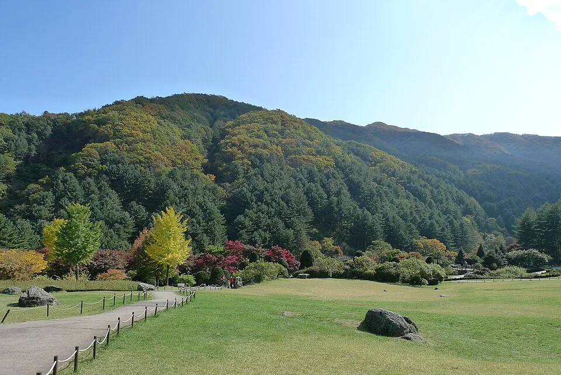
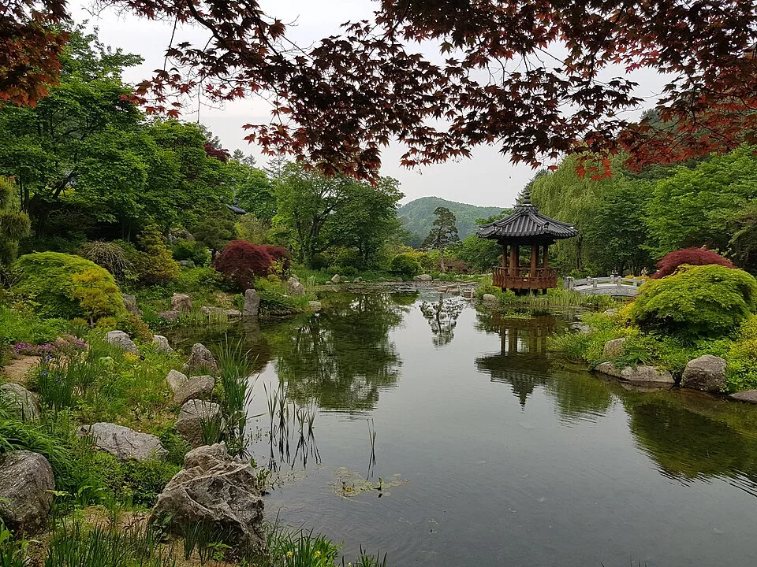
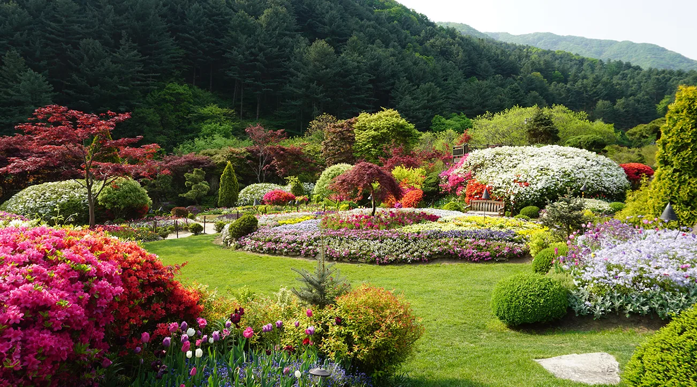
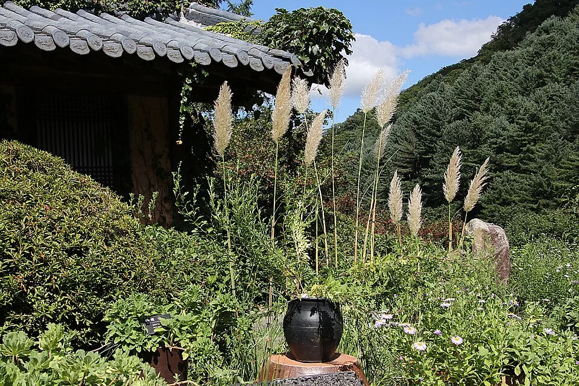
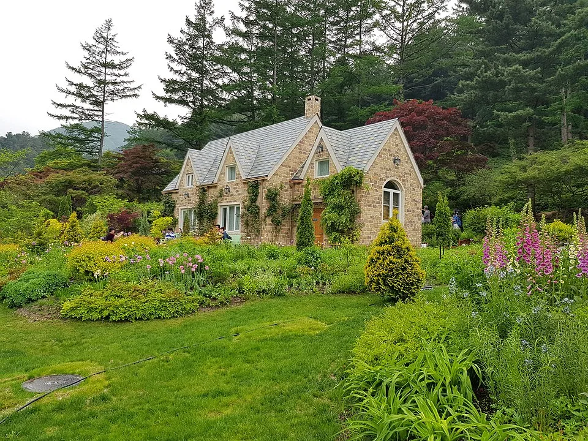
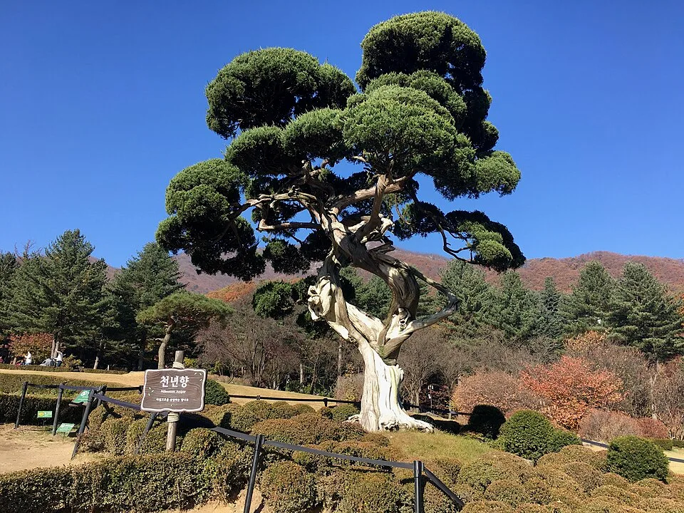
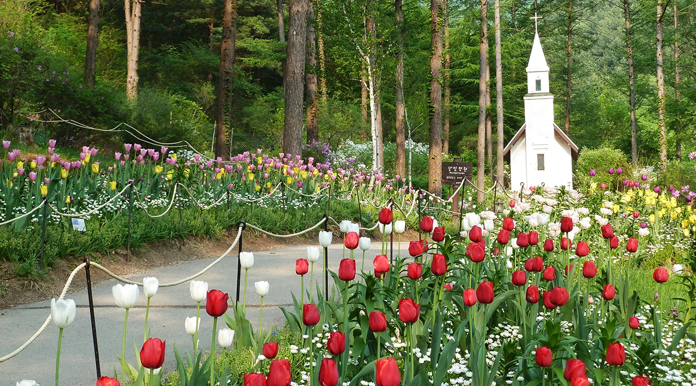
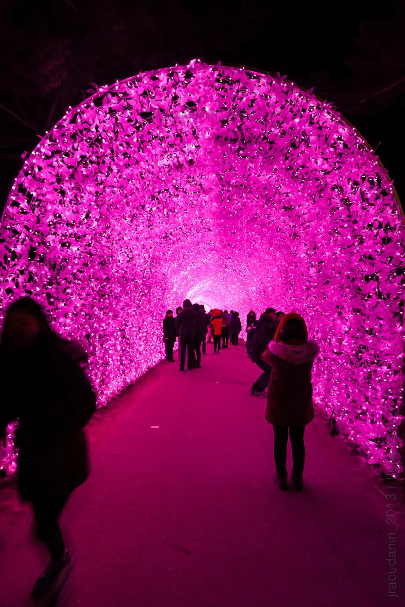

▲ 아침고요수목원 잔디원. 뒤로 명지산 자락이 둘러싸고 있어 가을이면 단풍과 함께 전경이 완성된다
경기 가평군 상면, 명지산 자락에 자리한 아침고요수목원은 5,000여 종의 식물을 20여 개 테마정원에 나눠 심은 국내 대표 사설 수목원이다. 1996년 문을 연 이래 '한국의 아름다운 정원'으로 꼽혀 왔는데, 정작 방문 시기를 잘못 잡으면 매력의 절반도 못 보고 돌아가기 쉽다. 가을엔 단풍과 국화가 겹치는 국화전시회, 겨울엔 정원 전체를 수백만 개 조명으로 물들이는 오색별빛정원전이 매년 열리기 때문이다. 이 기사는 정원 구성부터 가을·겨울 축제 일정, 입장료·주차·가는 법까지 방문 순서대로 정리했다.
1. 5,000여 종 식물, 20개 테마정원 — 아침고요수목원은 어떤 곳인가

▲ 한국정원 구역의 연못과 정자. 전통 조경 요소와 사계절 화목이 함께 어우러진다 ⓒ Wikimedia Commons
아침고요수목원은 10만 평 부지에 한국정원, 분재정원, 하경정원, 무궁화정원, 관상수정원, 하늘길정원 등 20여 개 테마정원이 이어지는 구조다. 명지산·연인산 자락에 둘러싸여 있어 정원 안 어디서든 산세와 조경이 함께 눈에 들어오는 것이 특징이다. 봄에는 매화·튤립, 여름에는 수국·원추리, 가을에는 국화와 단풍, 겨울에는 조명으로 매 계절 테마가 완전히 달라져 '사계절 정원'으로 불린다. 정원 규모가 크고 산책로가 굽이굽이 이어지는 만큼, 처음 방문한다면 주요 포토스팟 위치를 미리 파악해 두는 편이 동선을 짜기 편하다.

▲ 위에서 내려다본 테마정원 전경. 굽이진 산책로를 따라 봄꽃 화단이 이어진다 ⓒ 가평군청
2. 포토스팟 — 대감집, 관상수정원, 분재원 천년향

▲ 전통 가옥과 억새가 어우러진 대감집 구역. 가을 단풍철 대표 포토스팟으로 꼽힌다 ⓒ Wikimedia Commons
수목원 안에서도 특히 사진이 잘 나오는 구역으로 꼽히는 곳이 몇 군데 있다. 전통 가옥과 억새·단풍이 어우러진 대감집 일대, 서양식 돌집과 화단이 어우러진 관상수정원, 그리고 분재원의 상징인 수령 1,000년 향나무 '천년향'이다. 천년향은 원래 경상북도 청도의 개인 소유였던 향나무를 옮겨 심은 것으로, 아침고요수목원을 대표하는 포토스팟 중 하나로 꼽힌다.

▲ 서양식 돌집과 화단으로 꾸민 관상수정원 일대. 계절 화훼가 늘 바뀌어 심어진다 ⓒ Wikimedia Commons

▲ 분재원의 상징인 수령 1,000년 향나무 '천년향'. 독특한 수형으로 방문객들의 발길이 끊이지 않는다 ⓒ Wikimedia Commons

▲ 봄철 튤립 화단 너머로 보이는 하얀 소예배당. 사계절 정원답게 계절마다 전혀 다른 풍경을 보여준다 ⓒ 가평군청
3. 가을 국화전시회 — 단풍과 국화가 겹치는 시기
아침고요수목원의 가을은 국화전시회로 완성된다. 매년 10월 중순부터 11월 초 사이 아침마루·산수경 온실 등에서 국화 작품 수백 점을 전시하는데, 2025년에는 10월 18일부터 11월 9일까지 약 3주간 열려 단풍이 절정에 이르는 시기와 겹쳤다. 이보다 앞서 9월 중순부터는 규모가 작은 들국화전시회가 먼저 문을 여는데, 2026년에는 9월 12일부터 10월 11일까지 진행 중이다. 본행사인 국화전시회의 정확한 2026년 일정은 시즌이 가까워지면 공식 홈페이지에 공지되므로, 방문 전 최신 공지를 확인하는 것이 좋다.
아침고요수목원 공식 홈페이지에서 국화전시회 일정 확인 가능4. 겨울 오색별빛정원전 — 수백만 개 조명이 켜지는 밤

▲ 겨울 시즌 야간 조명 터널. 수백만 개 LED가 정원 전체를 낮과 전혀 다른 풍경으로 바꿔 놓는다 ⓒ Wikimedia Commons
아침고요수목원의 겨울을 대표하는 행사는 오색별빛정원전이다. 매년 12월 초 개막해 이듬해 3월 중순까지 이어지는 국내 최대 규모 겨울 야간 조명 축제로, 33만㎡ 부지 전체에 LED 조명 수백만 개를 밝혀 낮과는 완전히 다른 정원을 연출한다. 19회를 맞은 2025~2026 시즌은 2025년 12월 5일 개막해 2026년 3월 15일까지 운영됐다. 축제 기간에는 운영시간이 10:00~21:00(토요일은 23:00까지 연장)으로 늘어나며, 입장료는 개인관람 기준 일반 요금과 동일하게 적용된다. 다가오는 2026~2027 시즌 정확한 개막일은 통상 11월 말~12월 초 공식 발표되므로, 방문 계획이 있다면 공식 채널을 주기적으로 확인하는 편이 좋다.
한국관광공사에서 오색별빛정원전 소개 확인 가능5. 입장료·운영시간·주차·가는 법
아침고요수목원은 연중무휴로 운영되며, 평시 관람 시간은 08:30~19:00(입장 마감 18:00)이다. 겨울 오색별빛정원전 기간에는 야간 운영에 맞춰 10:00~21:00으로 변경되고 토요일은 23:00까지 연장된다. 개인 입장료는 어른 11,000원, 청소년 8,500원, 어린이(36개월~초등학생) 7,500원이며, 경로·유공자·장애인 우대 요금은 9,000원이다. 주차는 무료로 운영된다.
| 항목 | 내용 |
|---|---|
| 입장료(일반) | 어른 11,000원 · 청소년 8,500원 · 어린이 7,500원 |
| 입장료(우대) | 경로·유공자·장애인 9,000원 |
| 운영시간(평시) | 08:30~19:00, 입장 마감 18:00, 연중무휴 |
| 운영시간(별빛정원전 기간) | 10:00~21:00, 토요일 ~23:00 |
| 주차 | 무료 |
| 위치 | 경기도 가평군 상면 수목원로 432 |
| 문의 | 1544-6703 |
대중교통으로는 경춘선 또는 ITX-청춘을 타고 청평역에서 내린 뒤, 청평터미널·청평역에서 출발하는 30-6번 시내버스를 타면 수목원 종점에서 바로 내릴 수 있다. 수요일을 제외하고 하루 8,000원에 자유롭게 이용할 수 있는 가평시티투어버스도 대안이다. 택시를 이용하면 청평에서 약 20분 걸린다. 자가용을 이용할 경우 무료 주차장이 넉넉하게 마련돼 있어 큰 불편은 없다.
아침고요수목원 공식 홈페이지에서 오시는 길 확인 가능6. 가평 여행 연계 — 함께 묶기 좋은 근교 명소
아침고요수목원만 둘러보고 돌아가기엔 가평은 볼거리가 많은 지역이다. 수목원에서 차로 20~30분 거리에 자라섬과 남이섬이 있어 오전엔 수목원, 오후엔 강변 산책이나 섬 나들이로 이어 붙이는 일정이 흔하다. 좀 더 색다른 코스를 원한다면 인근 쁘띠프랑스를 묶는 경우도 많다. 겨울 오색별빛정원전 기간에는 저녁 시간대 방문객이 몰리는 만큼, 오후 이른 시간에 입장해 해 질 무렵부터 야간 조명을 감상하는 동선을 추천한다.
✅ 가평 아침고요수목원, 가기 전 체크리스트
· 1996년 개원, 5,000여 종 식물을 20여 개 테마정원에 나눠 조성
· 대표 포토스팟은 대감집, 관상수정원 돌집, 분재원 천년향(수령 1,000년 향나무)
· 가을 국화전시회는 통상 10월 중순~11월 초, 앞서 들국화전시회는 9월 중순부터 별도 운영(2026년 9/12~10/11)
· 겨울 오색별빛정원전은 12월 초~이듬해 3월 중순, 19회(2025~2026 시즌)는 12/5~3/15 운영
· 입장료 일반 어른 11,000원·청소년 8,500원·어린이 7,500원, 주차 무료
· 평시 08:30~19:00, 별빛정원전 기간 10:00~21:00(토 ~23:00), 연중무휴
· 청평역에서 30-6번 버스 또는 가평시티투어버스로 접근 가능
· 2026~2027 겨울 시즌 정확한 개막일은 공식 홈페이지 공지로 재확인 필요